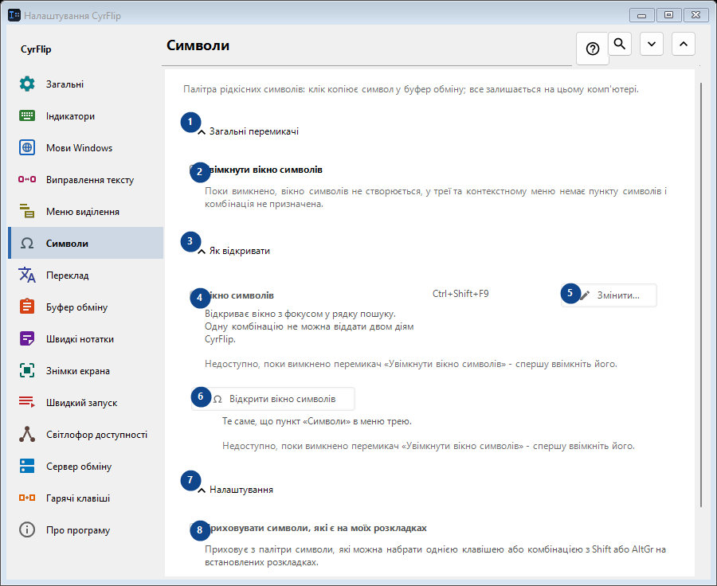
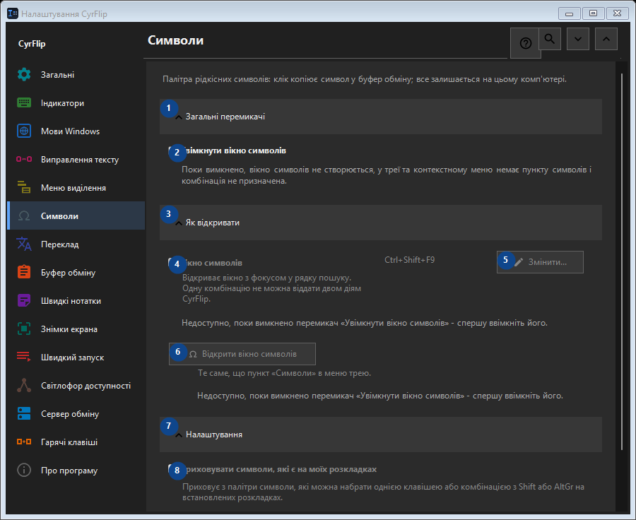

Символи
Для чого це вікно
Палітра рідкісних символів: клік копіює символ у буфер обміну; все залишається на цьому комп'ютері.


Порядок дій
Налаштування застосовуються одразу. Обов’язкового порядку немає; користуйтеся групами нижче.
Елементи
1. Загальні перемикачі
Скористайтеся командою, коли потрібна вказана дія. Прочитайте запит підтвердження перед згодою.
Ваші сполучення клавіш2. Увімкнути вікно символів
Поки вимкнено, вікно символів не створюється, у треї та контекстному меню немає пункту символів і комбінація не призначена.
Ваші сполучення клавіш3. Як відкривати
Скористайтеся командою, коли потрібна вказана дія. Прочитайте запит підтвердження перед згодою.
Ваші сполучення клавіш4. Вікно символів
Недоступно, поки вимкнено перемикач «Увімкнути вікно символів» - спершу ввімкніть його. Елемент зараз недоступний. Спочатку ввімкніть функцію або виберіть запис.
Ваші сполучення клавіш5. Змінити - Вікно символів
Недоступно, поки вимкнено перемикач «Увімкнути вікно символів» - спершу ввімкніть його. Елемент зараз недоступний. Спочатку ввімкніть функцію або виберіть запис.
Ваші сполучення клавіш6. Відкрити вікно символів
Недоступно, поки вимкнено перемикач «Увімкнути вікно символів» - спершу ввімкніть його. Елемент зараз недоступний. Спочатку ввімкніть функцію або виберіть запис.
Ваші сполучення клавіш7. Налаштування
Скористайтеся командою, коли потрібна вказана дія. Прочитайте запит підтвердження перед згодою.
Ваші сполучення клавіш8. Приховувати символи, які є на моїх розкладках
Недоступно, поки вимкнено перемикач «Увімкнути вікно символів» - спершу ввімкніть його. Елемент зараз недоступний. Спочатку ввімкніть функцію або виберіть запис.
Ваші сполучення клавіш